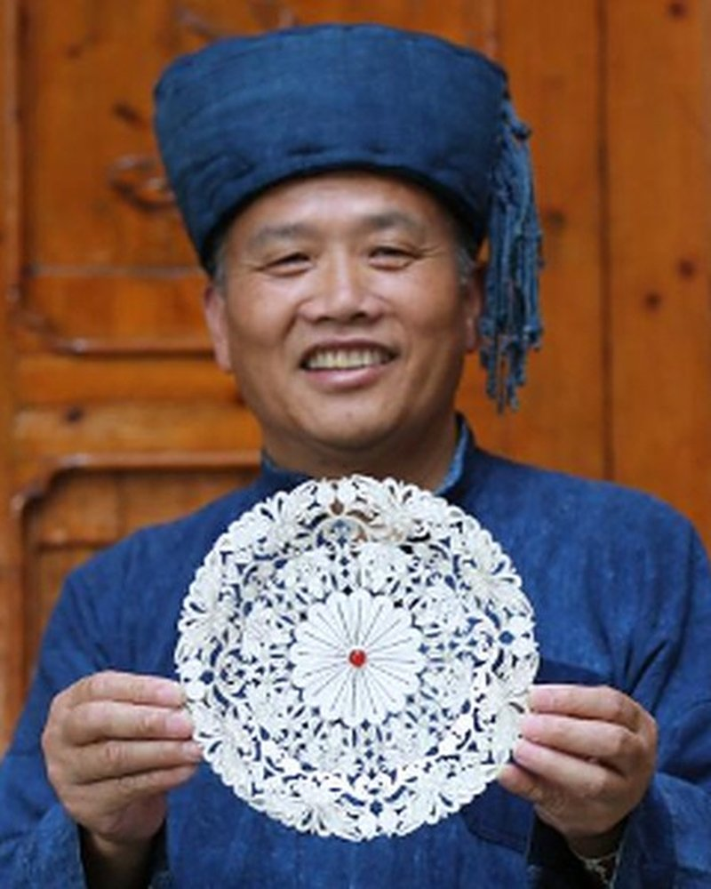
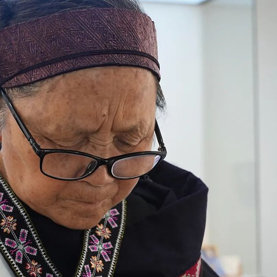
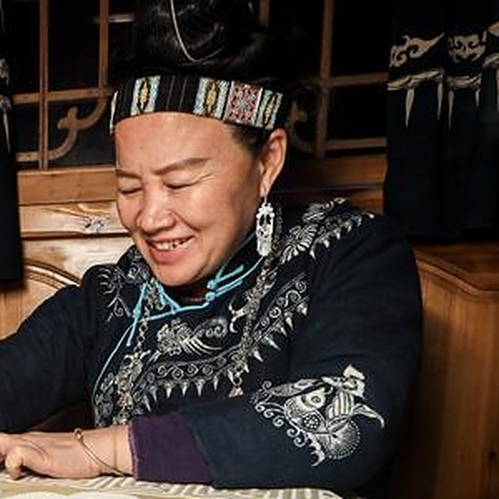

-

杨光宾
苗族银饰锻制技艺国家级传承人
贵州雷山西江控拜银匠世家第五代传人，十三岁随父学艺，十五岁出师游艺。熔炼、铸型、锻制、拉丝、焊接、錾刻、编结、洗涤三十余道工序皆能手握，能把一块银锭反复锤成细如发丝，再编作振翅欲飞的蝴蝶。如今带徒授艺，把家传的手艺往外传。
-

王启萍
苗绣（花溪苗绣）国家级传承人
七岁起随母亲与长辈学绣，十二岁便掌住苗绣的基本技艺，后拜刺绣艺人王朝珍为师，习传统苗族挑花绣。以十字为基本针法，不用底稿、数纱而绣，先挑出轮廓再填细部，练就「反面挑、正面看」的绝活。代表作有《苗族妇女盛装》《娃娃肚兜》等。
-

杨芳
苗族蜡染技艺国家级传承人
贵州丹寨人，自幼学习苗族蜡染，能独立复现老一辈传下来的古老图案，也挖出了带本地文化内涵的新纹样。作品里存着本民族本支系的历史文化，既是日常可用之物，又具收藏价值。在乡里办起蜡染专业合作社，四百余名社员，带当地妇女一道把手艺换成生计。
一手一艺 · 一生一事
近期动态
山间有盛会 · 一针一线皆回响